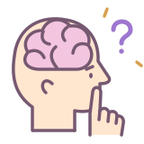

PLAY
GROUND한 번 꽂히면, 일단 실행.
● ● ●welcome↗
HELLO, CURIOUS WORLD!어서 와요,
내 머릿속은 이래요.
아이디어는 여기저기, 호기심은 가득!

정신연령은호기심 많은 유딩재밌는 냄새에호기심 발동!겉모습과 다르게똘끼는 충만한 번 꽂히면 겁 없이전력 질주!게임? 환장함Path of ExileAssassin's Creed인생의 즐거움놀먹 좋아 나는 지금 매우 너그러운 상태다~☺
오늘 할 일
재밌는 거 만들기 ✓철들기는 다음에.오늘 방문자 …Total 방문자 …
생각 노트
철들기는 다음에.만들고 싶은 걸 떠올릴 때가 제일 재밌습니다.
잘될지는 일단 만들어 보고 생각하기로 했어요.
주인아저씨의 노트
첫 생각을 남겨 주세요.
OWNER / CREATOR / FOREVER CURIOUS
주인아저씨 😎
겉보기엔 멀쩡한 어른, 정신연령은 호기심 가득한 유딩입니다. 똘끼는 넉넉하고, 재밌는 냄새는 기가 막히게 맡죠. 한 번 꽂히면 겁도 브레이크도 잠시 실종! 일단 전력 질주하며 만들고 보는, 철들 틈 없이 바쁜 주인아저씨입니다. 😎
GitHub 구경하기 ↗GUESTBOOK / SAY HELLO
떠든 사람
왔으면 한마디 떠들고 가요. ☺
로그인 없이 한마디 남겨요. 글은 방문자 모두에게 보여요. 관리자 로그인
남긴 이야기
아직 조용하네요. 첫 인사를 남겨 주세요!